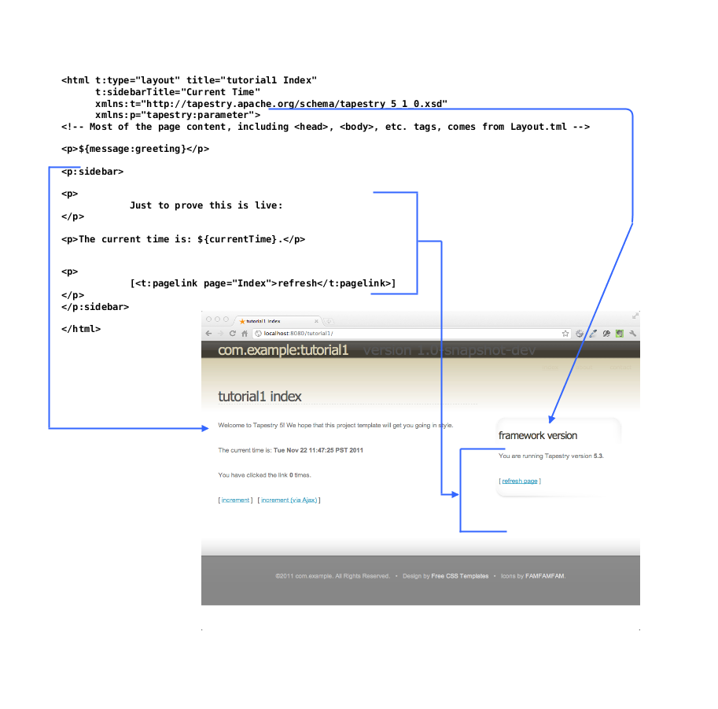
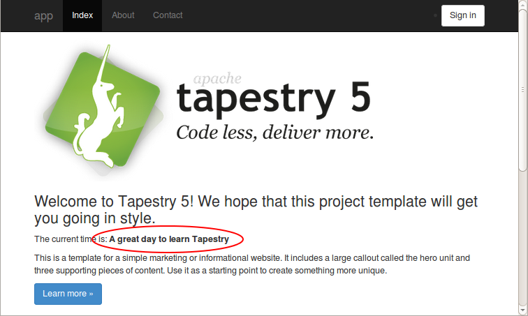
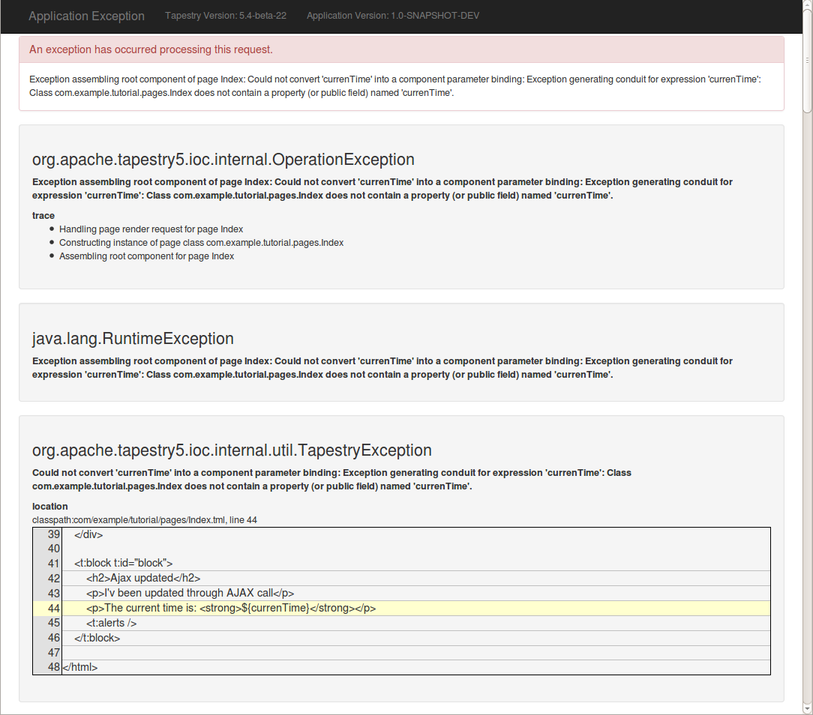
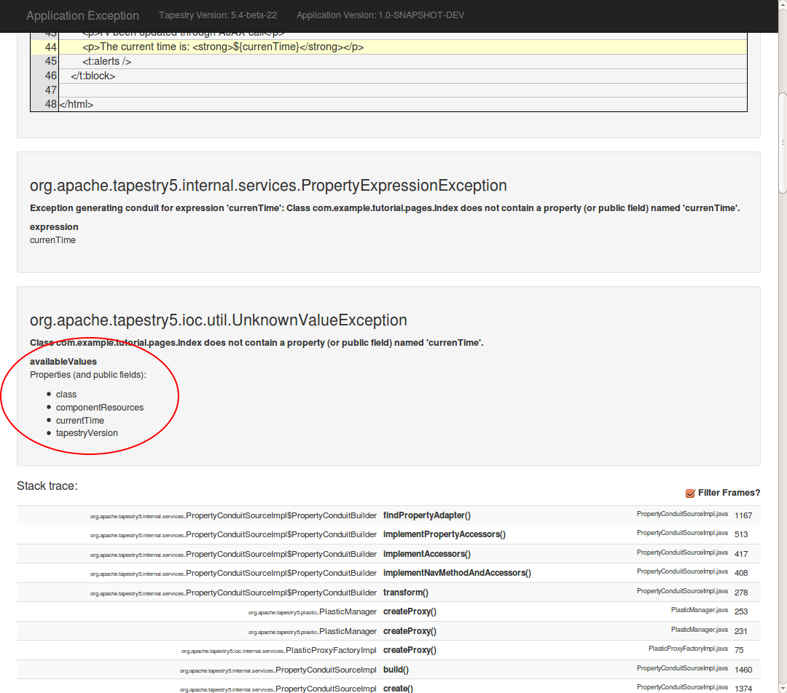

Exploring the Project
The layout of the project follows the sensible standards promoted by Maven:
-
Java source files under
src/main/java -
Web application files under
src/main/webapp(includingsrc/main/webapp/WEB-INF) -
Java test sources under
src/test/java -
Non-code resources (including Tapestry page and component templates) under
src/main/resourcesandsrc/test/resources
Let’s look at what Maven has created from the archetype, starting with the web.xml configuration file:
<?xml version="1.0" encoding="UTF-8"?>
<!DOCTYPE web-app
PUBLIC "-//Sun Microsystems, Inc.//DTD Web Application 2.3//EN"
"http://java.sun.com/dtd/web-app_2_3.dtd">
<web-app>
<display-name>tutorial1 Tapestry 5 Application</display-name>
<context-param>
<!-- The only significant configuration for Tapestry 5, this informs Tapestry
of where to look for pages, components and mixins. -->
<param-name>tapestry.app-package</param-name>
<param-value>com.example.tutorial1</param-value>
</context-param>
<!--
Specify some additional Modules for two different execution
modes: development and qa.
Remember that the default execution mode is production
-->
<context-param>
<param-name>tapestry.development-modules</param-name>
<param-value>
com.example.tutorial1.services.DevelopmentModule
</param-value>
</context-param>
<context-param>
<param-name>tapestry.qa-modules</param-name>
<param-value>
com.example.tutorial1.services.QaModule
</param-value>
</context-param>
<filter>
<filter-name>app</filter-name>
<filter-class>org.apache.tapestry5.TapestryFilter</filter-class>
</filter>
<filter-mapping>
<filter-name>app</filter-name>
<url-pattern>/*</url-pattern>
</filter-mapping>
</web-app>This is short and sweet: you can see that the package name you provided earlier shows up as the tapestry.app-package context parameter; the TapestryFilter instance will use this information to locate the Java classes for pages and components.
Tapestry operates as a servlet filter rather than as a traditional servlet. In this way, Tapestry has a chance to intercept all incoming requests, to determine which ones apply to Tapestry pages (or other resources). The net effect is that you don’t have to maintain any additional configuration for Tapestry to operate, regardless of how many pages or components you add to your application.
Much of the rest of web.xml is configuration to match Tapestry execution modes against module classes.
An execution mode defines how the application is being run: the default execution mode is "production", but the web.xml defines two additional modes: "development" and "qa" (for "Quality Assurance").
The module classes indicated will be loaded for those execution modes, and can change the configuration of the application is various ways.
We’ll come back to execution modes and module classes later in the tutorial.
Tapestry pages minimally consist of an ordinary Java class plus a component template file.
In the root of your web application, a page named "Index" will be used for any request that specifies no additional path after the context name.
Index Java Class
Tapestry has very specific rules for where page classes go.
Tapestry adds a sub-package, pages, to the root application package (com.example.tutorial1); the Java classes for pages goes there.
Thus the full Java class name is com.example.tutorial1.pages.Index.
package com.example.tutorial1.pages;
import org.apache.tapestry5.Block;
import org.apache.tapestry5.EventContext;
import org.apache.tapestry5.SymbolConstants;
import org.apache.tapestry5.annotations.InjectPage;
import org.apache.tapestry5.annotations.Log;
import org.apache.tapestry5.annotations.Property;
import org.apache.tapestry5.ioc.annotations.Inject;
import org.apache.tapestry5.ioc.annotations.Symbol;
import org.apache.tapestry5.services.HttpError;
import org.apache.tapestry5.services.ajax.AjaxResponseRenderer;
import org.slf4j.Logger;
import java.util.Date;
/**
* Start page of application tutorial1.
*/
public class Index
{
@Inject
private Logger logger;
@Inject
private AjaxResponseRenderer ajaxResponseRenderer;
@Property
@Inject
@Symbol(SymbolConstants.TAPESTRY_VERSION)
private String tapestryVersion;
@InjectPage
private About about;
@Inject
private Block block;
// Handle call with an unwanted context
Object onActivate(EventContext eventContext)
{
return eventContext.getCount() > 0 ? new HttpError(404, "Resource not found") : null;
}
Object onActionFromLearnMore()
{
about.setLearn("LearnMore");
return about;
}
@Log
void onComplete()
{
logger.info("Complete call on Index page");
}
@Log
void onAjax()
{
logger.info("Ajax call on Index page");
ajaxResponseRenderer.addRender("middlezone", block);
}
public Date getCurrentTime()
{
return new Date();
}
}There’s a bit going on in this listing, as the Index page attempts to demonstrate a bunch of different ideas in Tapestry. Even so, the class is essentially pretty simple: Tapestry pages and components have no base classes to extend, no interfaces to implement, and are just a very pure POJO (Plain Old Java Object) … with some special naming conventions and annotations for fields and methods.
You do have to meet the Tapestry framework partway:
-
You need to put the Java class in the expected package, here
com.example.tutorial1.pages. -
The class must be public.
-
You need to make sure there’s a public, no-arguments constructor (here, the Java compiler has silently provided one for us).
-
All non-static fields must be private.
As we saw when running the application, the page displays the current date and time, as well as a couple of extra links.
The currentTime property is where that value comes from; shortly we’ll see how that value is referenced in the template, so it can be extracted from the page and output.
Tapestry always matches a page class to a template; neither is functional without the other. In fact, components within a page are treated the same way (except that components do not always have templates).
You will often hear about the Model-View-Controller pattern (MVC). In Tapestry, the page class acts as both the Model (the source of data) and the controller (the logic that responds to user interaction). The template is the View in MVC. As a model, the page exposes JavaBeans properties that can be referenced in the template.
Let’s look at how the component template builds on the Java class to provide the full user interface.
Component Template
Tapestry pages are the combination of a POJO Java class with a Tapestry component template.
The template has the same name as the Java class, but has the extension .tml.
Since the Java class here is com.example.tutorial.pages.Index, the template file will be located at src/main/resources/com/example/tutorial/pages/Index.tml.
Ultimately, both the Java class and the component template file will be stored in the same folder within the deployed WAR file.
Tapestry component templates are well-formed XML documents. This means that you can use any available XML editor. Templates may even have a DOCTYPE or an XML schema to validate the structure of the template page.
|
Tapestry parses component templates using a non-validating parser; it only checks for well-formedness: proper syntax, balanced elements, attribute values are quoted, and so forth. It is reasonable for your build process to perform some kind of template validation, but Tapestry accepts the template as-is, as long as it parses cleanly. |
For the most part, a Tapestry component template looks like ordinary XHTML:
<html t:type="layout" title="tutorial1 Index"
xmlns:t="http://tapestry.apache.org/schema/tapestry_5_4.xsd"
xmlns:p="tapestry:parameter">
<div class="hero-unit">
<p>
<img src="${asset:context:images/tapestry.png}"
alt="${message:greeting}" title="${message:greeting}"/>
</p>
<h3>${message:greeting}</h3>
<p>The current time is: <strong>${currentTime}</strong></p>
<p>
This is a template for a simple marketing or informational website. It includes a large callout called
the hero unit and three supporting pieces of content. Use it as a starting point to create something
more unique.
</p>
<p><t:actionlink t:id="learnmore" class="btn btn-primary btn-large">Learn more »</t:actionlink></p>
</div>
<div class="row">
<div class="span4">
<h2>Normal link</h2>
<p>Clink the bottom link and the page refresh with event <code>complete</code></p>
<p><t:eventlink event="complete" class="btn btn-default">Complete»</t:eventlink></p>
</div>
<t:zone t:id="middlezone" class="span4">
</t:zone>
<div class="span4">
<h2>Ajax link</h2>
<p>Click the bottom link to update just the middle column with Ajax call with event <code>ajax</code></p>
<p><t:eventlink event="ajax" zone="middlezone" class="btn btn-default">Ajax»</t:eventlink></p>
</div>
</div>
<t:block t:id="block">
<h2>Ajax updated</h2>
<p>I'v been updated through AJAX call</p>
<p>The current time is: <strong>${currentTime}</strong></p>
</t:block>
</html>|
You do have to name your component template file, Index.tml, with the exact same case as the component class name, Index. If you get the case wrong, it may work on some operating systems (such as Mac OS X, Windows) and not on others (Linux, and most others). This can be really vexing, as it is common to develop on Windows and deploy on Linux or Solaris, so be careful about case in this one area. |
The goal in Tapestry is for component templates, such as Index.tml, to look as much as possible like ordinary, static HTML files.
(By static, we mean unchanging, as opposed to a dynamically generated Tapestry page.)
In fact, the expectation is that in many cases, the templates will start as static HTML files, created by a web developer, and then be instrumented to act as live Tapestry pages.
Tapestry hides non-standard elements and attributes inside XML namespaces. By convention, the prefix t: is used for the primary namespace, but that is not a requirement, any prefix you want to use is fine.
This short template demonstrates quite a few features of Tapestry.
|
Part of the concept of the quickstart archetype is to demonstrate a bunch of different features, approaches, and common patterns used in Tapestry. So yes, we’re hitting you with a lot all at once. |
Namespaces
First of all, there are two XML namespaces commonly defined:
<html t:type="layout" title="tutorial1 Index"
xmlns:t="http://tapestry.apache.org/schema/tapestry_5_4.xsd" (1)
xmlns:p="tapestry:parameter"> (2)| 1 | :t namespace: used to identify Tapestry-specific elements and attributes. Although there is an XSD (that is, a XML schema definition), it is incomplete (for reasons explained shortly) |
| 2 | :p namespace: A way of marking a chunk of the template as a parameter passed into another component. We’ll expand on that shortly. |
A Tapestry component template consists mostly of standard XHTML that will pass down to the client web browser unchanged. The dynamic aspects of the template are represented by components and expansions.
Expansions in Templates
Let’s start with expansions. Expansions are an easy way of including some dynamic output when rendering the page. By default, an expansion refers to a JavaBeans property of the page:
<p>The current time is: ${currentTime}</p>The value inside the curly braces is a property expression. Tapestry uses its own property expression language that is expressive, fast, and type-safe.
| Tapestry does NOT use reflection to implement property expressions. |
More advanced property expressions can traverse multiple properties (for example, user.address.city), or even invoke public methods.
Here the expansion simply reads the currentTime property of the page.
Tapestry follows the rules defined by Sun’s JavaBeans specification: a property name of currentTime maps to two methods: getCurrentTime() and setCurrentTime().
If you omit one or the other of these methods, the property is either read only (as here), or write only.
(Keep in mind that as far as JavaBeans properties go, it’s the methods that count; the names of the instance variables, or even whether they exist, is immaterial.)
Tapestry does go one step further: it ignores case when matching properties inside the expansion to properties of the page.
In the template we could say ${currenttime} or ${CurrentTime} or any variation, and Tapestry will still invoke the getCurrentTime() method.
Note that in Tapestry it is not necessary to configure what object holds the currentTime property.
A template and a page are always used in combination with each other; expressions are always rooted in the page instance, in this case, an instance of the Index class.
The Index.tml template includes a second expansion:
<p>${message:greeting}</p>Here greeting is not a property of the page; its actually a localized message key.
Every Tapestry page and component is allowed to have its own message catalog.
(There’s also a global message catalog, which we’ll describe later.)
greeting=Welcome to Tapestry 5! We hope that this project template will get you going in style.Message catalogs are useful for storing repeating strings outside of code or templates, though their primary purpose is related to localization of the application (which will be described in more detail in a later chapter).
Messages that may be used across multiple pages can be stored in the application’s global message catalog, src/main/webapp/WEB-INF/app.properties, instead.
This message: prefix is not some special case; there are actually quite a few of these binding prefixes built into Tapestry, each having a specific purpose.
In fact, omitting a binding prefix in an expansion is exactly the same as using the prop: binding prefix, which means to treat the binding as a property expression.
Expansions are useful for extracting a piece of information and rendering it out to the client as a string, but the real heavy lifting of Tapestry occurs inside components.
Components Inside Templates
Components can be represented inside a component template in two ways:
-
As an ordinary element, but with a t:type attribute to define the type of component.
-
As an element in the Tapestry namespace, in which case the element name determines the type.
Here we’ve used an <html> element to represent the application’s Layout component.
<html t:type="layout" ...>
...
</html>But for the EventLink component, we’ve used an element in the Tapestry namespace:
<t:eventlink page="Index">refresh page</t:eventlink>Which form you select is a matter of choice. In the vast majority of cases, they are exactly equivalent.
As elsewhere, case is ignored.
Here the types ("layout" and "eventlink") were in all lower case; the actual class names are Layout and EventLink.
Further, Tapestry "blends" the core library components in with the components defined by this application; thus type "layout" is mapped to application component class com.example.tutorial.components.Layout, but "eventlink" is mapped to Tapestry’s built-in org.apache.tapestry5.corelib.components.EventLink class.
Tapestry components are configured using parameters.
For each component, there is a set of parameters, each with a specific type and purpose.
Some parameters are required, others are optional.
Attributes of the element are used to bind parameters to specific literal values, or to page properties.
Tapestry is flexible here as well; you can always place an attribute in the Tapestry namespace (using the t: prefix), but in most cases, this is unnecessary.
<html t:type="layout" title="tutorial1 Index"
p:sidebarTitle="Framework Version" ...This binds two parameters, title and sidebarTitle, of the Layout component to the literal strings "tutorial1 Index" and "Framework Version", respectively.
The Layout component will actually provide the bulk of the HTML ultimately sent to the browser; we’ll look at its template in a later chapter. The point is, the page’s template is integrated into the Layout component’s template. The following diagram shows how parameters passed to the Layout component end up rendered in the final page:

The interesting point here (and this is an advanced concept in Tapestry, one we’ll return to later) is that we can pass a chunk of the Index.tml template to the Layout component as the sidebar parameter.
That’s what the tapestry:parameter namespace (the p: prefix) is for; the element name is matched against a parameter of the component and the entire block of the template is passed into the Layout component … which decides where, inside its template, that block gets rendered.
<t:eventlink event="complete" class="btn btn-default">Complete»</t:eventlink>This time, it’s the page parameter of the PageLink component that is bound, to the literal value "Index" (which is the name of this page).
This gets rendered as a URL that re-renders the page, which is how the current time gets updated.
You can also create links to other pages in the application and, as we’ll see in later chapters, attach additional information to the URL beyond just the page name.
A Magic Trick
Now it’s time for a magic trick.
Edit Index.java and change the getCurrentTime() method to:
public String getCurrentTime()
{
return "A great day to learn Tapestry";
}Make sure you save changes; then click the refresh link in the web browser:

This is one of Tapestry’s early wow factor features: changes to your component classes are picked up immediately (a feature we call Live Class Reloading). No restart. No re-deploy. Make the changes and see them now. Nothing should slow you down or get in the way of you getting your job done.
|
If Live Class Reloading isn’t working for you, check Troubleshooting Live Class Reloading. |
But… what if you make a mistake? What if you got the name in the template wrong. Give it a try; in the template, change ${currentTime} to, say, ${currenTime}, and see what you get:

This is Tapestry’s exception report page. It’s quite detailed. It clearly identifies what Tapestry was doing, and relates the problem to a specific line in the template, which is shown in context. Tapestry always expands out the entire stack of exceptions, because it is so common for exceptions to be thrown, caught, and re-thrown inside other exceptions. In fact, if we scroll down just a little bit, we see more detail about this exception, plus a little bit of help:

This is part of Tapestry’s way: it not only spells out exactly what it was doing and what went wrong, but it even helps you find a solution; here it tells you the names of properties you could have used.
|
This level of detail reflects that the application has been configured to run in development mode instead of production mode. In production mode, the exception report would simply be the top level exception message. However, most production applications go further and customize how Tapestry handles and reports exceptions. |
Tapestry displays the stack trace of the deepest exception, along with lots of details about the run-time environment: details about the current request, the HttpSession (if one exists), and even a detailed list of all JVM system properties.
Scroll down to see all this information.